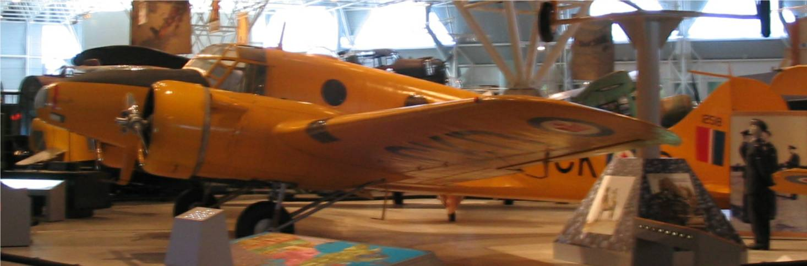

The Family Chronicle
No. 80 October 1, 2004
________________

A photo of the Avro Anson taken at the Air Museum in Ottawa. Avro Ansons were used at No. 10 A.O. S (Air Observer School) which was part of the Chatham Air Force Base during WW2. All the aircraft at both No. !0 AOS and No. 21 EFTS were painted a bright yellow presumably for easy spotting in the air and should they crash.
While we do not know the year Dad went to Portland, we now have proof that he was living there in 1901. Proof is in the form of a certificate admitting him to Lodge No. 117 of the Independent Order of Odd-fellows. He would have been 26 years old at the time.
While in high school, there were not many opportunities to earn spending money. While I cannot recall having an allowance, neither can I recall being without money to do the things I wanted to do.
I recall searching the Family Herald and Weekly Star, a weekly newspaper found in every farm home, and finding a company, Warco Grease and Oil in or near Toronto (Dundas or Dundas Street perhaps) Their specialty was graphite grease and oil. I became an agent for them and would order cases, quarts and gallons, of oil and grease and retail them to family and neighbours.
My two largest orders, as I recall, were a barrel of oil ordered by Uncle Jack (John W.) MacNaughton for use in his sawmill. I remember phoning Uncle Jack and asking if he was interested in trying it. He asked quite a few questions and then said “yes”. I assume that he bought it to be kind.
The other was an order of paint by my brother, Walter, to paint his house. ($5.00) per gallon) Through my business, I brought the first paint rollers to Black River. I remember seeing them listed in the catalogue and ordering a couple on a trial basis. So you can see that I was on the cutting edge of technology of the day.
It was interesting and it did give me some spending money. I had expected to make my first million through that business. When it became obvious that my first million was out of reach, I changed objectives and started working towards my second million. I’ve given up on that also and am now workikng on my third million.
Brother Ken remembers A. T. Patstone was principal of MRHS but we are not sure of Mr. Armstrong.
Brother Ken also remembered that a pilot was killed in the plane crash in Black River – the crash at Herb MacDonald’s lane. It was a snowy day but not windy, we were at MRHS and, on the way home, the school bus stopped and we all walked in the lane to the crash site. The plane went into a tailspin.
Cow bells
Farms were not fenced; cows were allowed to run loose and, as I recall, you fenced the fields to keep cows out of gardens and grain for example, rather than to keep them in. Cows often traveled quite a distance from their owner’s place. Farmers would have a half-dozen or more cows each. Each farmer attached a bell to at least one cow so their whereabouts would be known. When milking time arrived, one listened for the sound of the cowbell for your cows. Sometimes cows from a number of herds would feed together. By listening, one could location of cows belonging to you.
As car and truck traffic increased, cows would sometime dart on to the road, be struck by a car, and be killed. When this happened, it was the driver, not the farmer, who was at fault. I recall once when John struck a heifer down in Hardwicke. The animal was killed, or so badly injured that they killed it, then brought it home to be dressed.
Eventually herd law was introduced. That meant that farmers had to fence their animals. If an animal strayed on to the road and was struck by a car, it was the farmer not the auto driver who was at fault. I used to worry when bringing cows home from the “Finno field”, nearly a half mile away, that one would jump in front of a car. It only happened once.
For some reason, we were using a gate at the bottom of Ken’s Hill rather than the usual gate at the top. I drove the cows out the gate onto the road. Just then, a big truck, 3 ton or more, appeared at the top of Ken’s hill. Of course, coming down the hill, it took longer to stop than on the level. The front bumper actually struck a cow’s leg but did no damage. I was a frightened little boy, I can tell you. This is the first time I ever told the story. I guess I was afraid that I would be blamed if a cow had been hurt or killed.
A Yoke and a Humble Cow
Not all cows thought the grass in the field was best. Some wanted to eat the forbidden hay on the other side of the fence. Some times this was by necessity if the summer was dry and the pasture was bare. Some times a cow would push against the fence and, in fact, push through. To prevent this, a yoke was made around the cow’s neck. A yoke was made by nailing three small pieces of board together to form a triangle. If a cow tried to push through a fence, the yoke came up against the wire.
Once, we had a humble cow. She was a big, young Holstein. Humble meant having no horns. Whether this was from birth or a man-made state I cannot recall,
The Chronicle is an occasional newsletter prepared by Don Glendenning and posted on the family website. It is designed to share information about my family, community and the times in which I grew up. While every effort is made to be accurate, errors are likely to occur. Comments, enquiries and information may be sent to 62 Queen Elizabeth Drive, Charlottetown, PEI, C1A 3A9. Tel: 902-892-5859 Email: dglende@auracom.com Web: www.glendenning.net